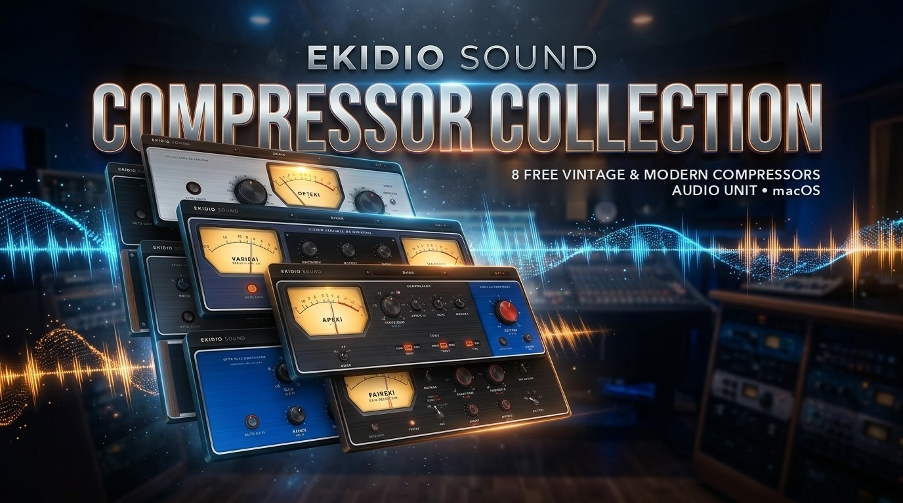

Kompresszorcsalád
Nyolc kompresszor, a legselymesebb optikai szintszabályzótól a legvadabb FET-es zúzásig.

OPTEKI
Selymes optikai cella kétlépcsős, programfüggő elengedéssel: minél tovább dolgozik, annál lassabban enged el. Csak GAIN és PEAK REDUCTION, plusz Compress/Limit.
Ének, basszus, akusztikus hangszerek.

FETEKI
Villámgyors felfutás (akár 20 µs), 4 · 8 · 12 · 20 arány-gombok és az agresszív ALL mód a túlkompresszált, izgalmas „zúzáshoz”.
Dob, roommikrofon, karakteres ének, basszus.

VARIEKI
Precíz kettős (csúcs + RMS) detektálás láthatatlanul sima szabályozáshoz, rá opcionálisan vari-mu csőszín. Két műszer: csökkentés és kimenet.
Mixbusz, mastering, sima énekszint.

BUSEKI
A konzolos VCA „ragasztó”: lépcsős ratio, attack és release, programfüggő AUTO elengedés, oldallánc-felüláteresztő, hogy a lábdob ne pumpálja a mixet.
Mixbusz, dobbusz, a „ragasztó”.

APEKI
A THRUST-tól a mély átüt, a KNEE keménytől lágyig állítható, a TYPE feszes előrecsatolt és sima, vintage visszacsatolt mód között vált. A nagy piros OUTPUT a többit elmondja.
Dobbusz, mixbusz, punchos basszus.

DBEKI
Valódi RMS-detektálás programfüggő felfutással és állandó 120 dB/s elengedéssel — a klasszikus csattanás lábdobon és pergőn. OVEREASY lágy térd egy kattintással, BELOW/ABOVE küszöb-LED-ek.
Lábdob, pergő, basszus, gitárok.

TUBEKI
Krémes optikai cella csöves erősítőfokozattal: a GAIN-nel belehajtva melegebb. Fix, kézi vagy kombinált időzítés, párhuzamos kompresszió.
Ének, basszus, akusztikus gitár, mixbusz melegítés.

FAIREKI
Visszacsatolt vari-mu csöves limitálás, ami minél jobban hajtod, annál meredekebb; hat időállandó (az 5 és 6 programfüggő) és LAT/VERT közép-oldal mód.
Mixbusz, mastering, súlyt kívánó dob és ének.